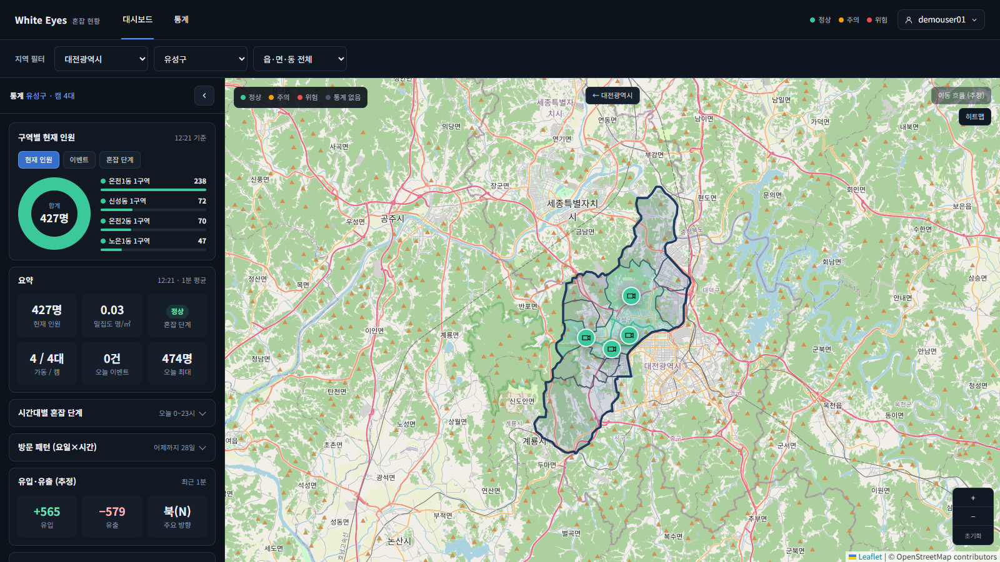
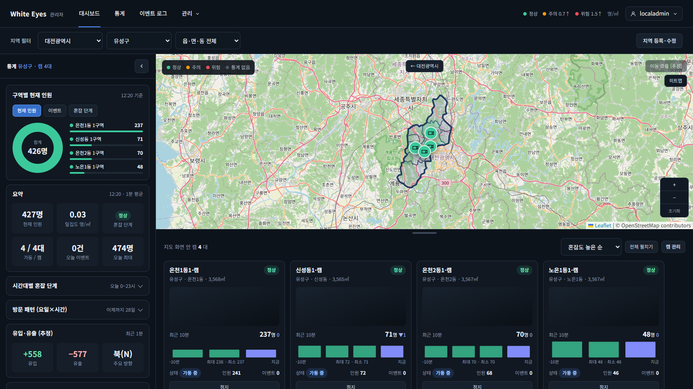
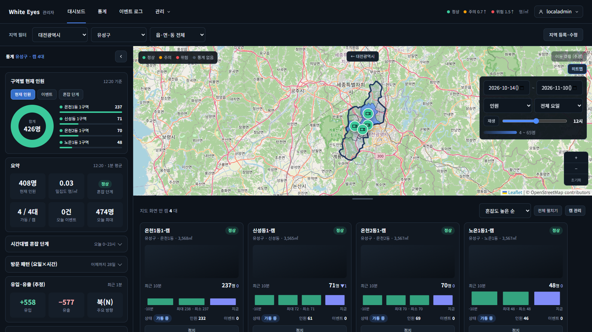
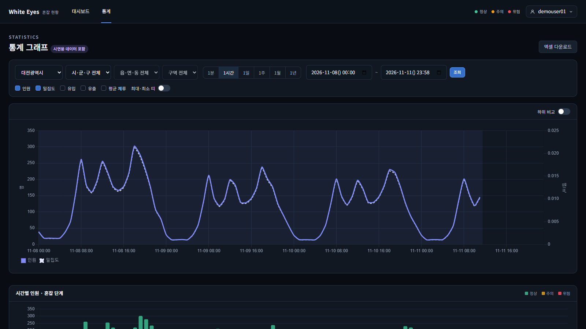

2차 팀 프로젝트 · 드론 관제 유동인구 분석
지금 몇 명이 어디에 있을까
드론·CCTV 영상에서 사람을 세고 따라가며 구역별 인원·밀집도·유입/유출·체류 시간을 쌓아, 지도·그래프·대시보드로 보여주는 군중 관제 서비스입니다. 혼잡이 심해지면 이벤트로 기록해 관리자에게 알립니다.
- Java 17
- Spring Boot
- Spring Security
- JPA
- MySQL · Flyway
- Flask · YOLOv8
- Leaflet · Chart.js
- nginx · Docker Compose
실행하면 이런 화면이 나와요
MAIN SCREEN · 사용자/관리자 탭, 지도, 메뉴를 눌러 보세요※ 실제 White Eyes(사용자 앱·관리자 앱)를 docker compose 로 실행해 가져온 화면입니다. 지도 이동·구역/캠 클릭·메뉴(통계, 이벤트 로그, 관리)를 눌러 볼 수 있어요. 인원 수치는 시연용 데이터이고 영상 분석은 실행하지 않아 캠 미리보기는 비어 있으며, 지도는 인터넷 연결이 필요합니다. 로그인·저장은 동작하지 않는 데모입니다.
구조
ARCHITECTURE사용자 앱 · Spring :8080
통계를 보는 고객용. 지도·그래프·대시보드·히트맵·엑셀 내려받기. 사람이 찍힌 영상은 볼 수 없고 통계만 제공합니다.
관리자 앱 · Spring :8081
구역 등록, 캠 관리, 실시간 분석 화면·다시보기, 혼잡·급증·캠 이상 이벤트 처리, 사용자 승인, 작업 기록.
분석 서버 · Flask :5000
YOLOv8(VisDrone)으로 사람 탐지·추적, 유입/유출 판정, 체류 시간 계산. 결과를 1초마다 관리자 앱에 전송하고 영상은 1분 단위로 녹화.
nginx 리버스 프록시 뒤에서 docker compose 로 함께 실행하고, 두 앱은 MySQL(Flyway 마이그레이션)을 사용합니다.
핵심 기능
KEY FEATURES지도 탐색
시 → 구 → 동 → 구역 순으로 들어가는 지도. 혼잡 단계(정상·주의·위험)를 색으로 표시합니다.
통계 그래프
기간·단위(1분~1년)별 그래프, 점을 눌러 한 단계씩 들어가기. 요일별 방문 패턴, 시간대별 히트맵, 구역 간 이동 흐름.
실시간 분석
박스를 그린 실시간 스트림과 다시보기(원본 영상 위에 탐지 박스).
이벤트 알림
혼잡·급증·캠 이상을 이벤트로 기록하고 확인 → 조치완료로 처리.
구역·캠 관리
관리자가 지도에서 구역을 직접 그려 등록하고 캠을 가동·정지합니다.
팀 협업 프로세스
명세 → 이슈 → PR 순서, dev 대상 PR·squash merge, CI 통과 후 승인.
실제 구현 화면
SCREENSHOTS


